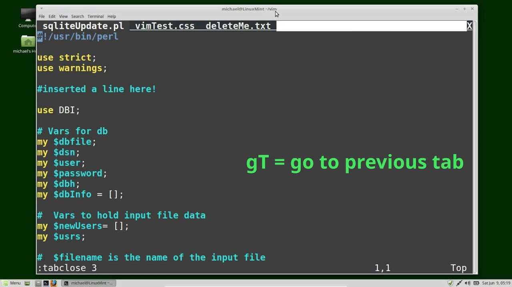

Vim and my expreiences
I tried using the vim text editor for making this page and I have to say; The vim text editor has way better visual highlighting for the syntax than Emacs obiously Emacs is probably way more customizable than vim, but the default settings just seem to be better for a laymans eyes.
I personally dont enjoy having to always esc :w to save my work, it slows down my pace and throws my workflow off. Having to exit the insert mode and save that way is frustrating.
Switching between the files isn't as great as Emacs either and I couldn't figure out how to get my css and html files to split horizontally.
The emmet plugin is a great tool for html, I love the fact that there is an easy way to get the simple html frame into the program quickly with only a few button presses.

I think vim is an ok text editor, but some of the features just feel really clunky.The copy and paste didn't work for me for some reason and I just gave up trying to use it after a few tries. Also the different modes and getting used to all the differing keybinds in said modes is a little too overwhelming for a beginner like me. I personally see myself using Emacs and Micro more than vim.